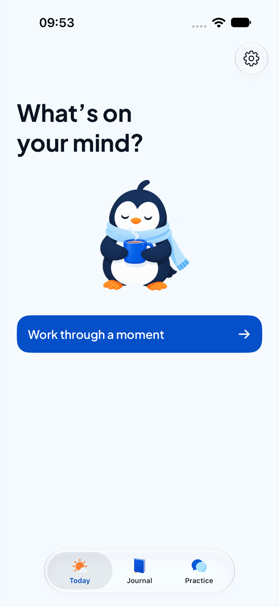

Before: a black line-art penguin icon, a mascot that changed face from screen to screen, and screens that explained themselves in paragraphs.
The idea: one character, Pingu, drawn softly and used sparingly; an ice-blue world; and a rule that every screen says one thing in one short line. Circle for the people around you, U for you, and for university.
What stayed: the name, the three tabs (Today, Journal, Practice), the blue, and the promise that nothing leaves the phone.

Line-art icon · mascot in the middle of the screen · one big button Brand mark · scene above the editor · write first, one Save
Brand mark · scene above the editor · write first, one Save